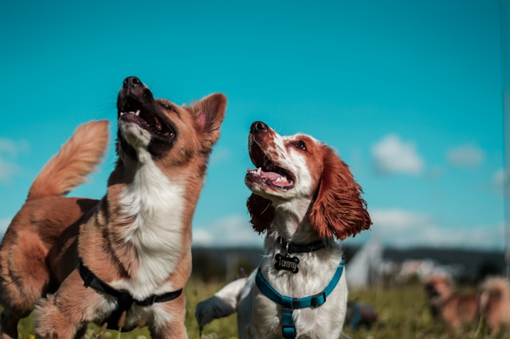
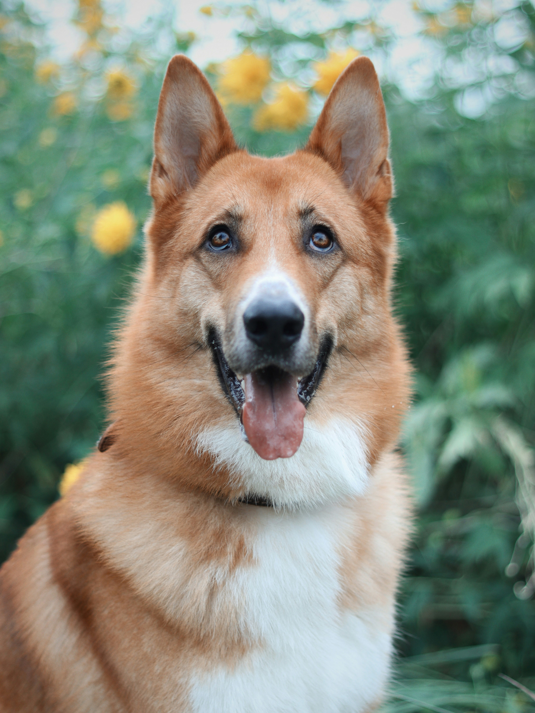
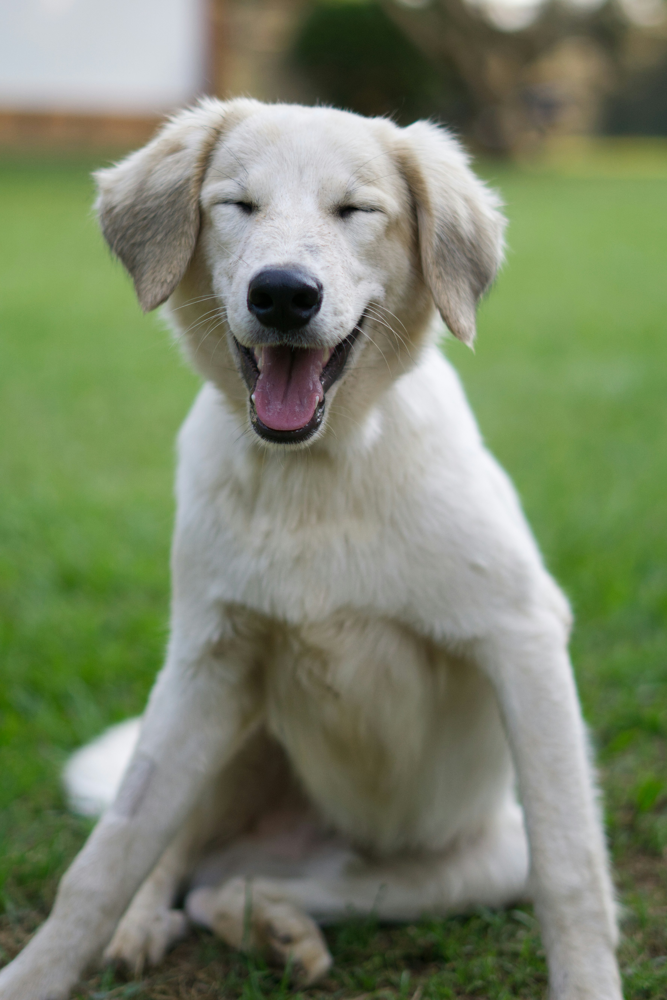
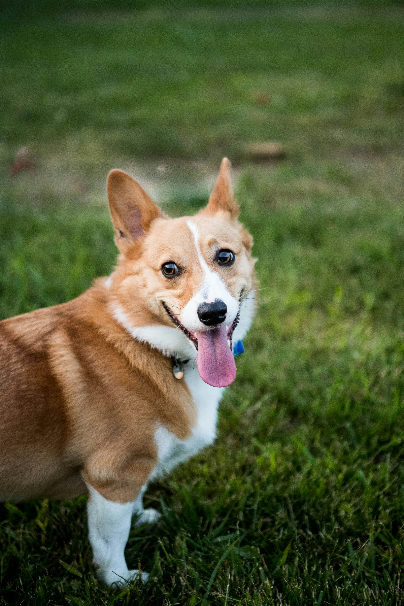
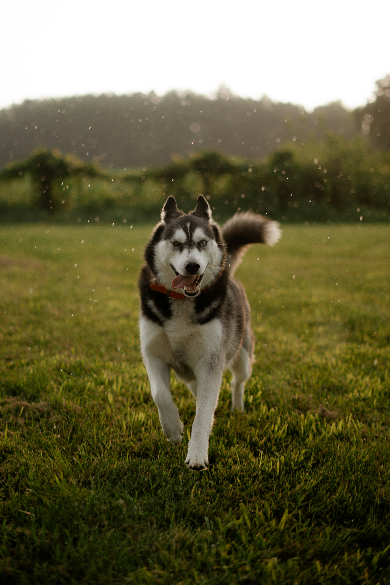

Looking for a new furry friend?
Well look no further! We have many animals looking for a new home.

Photo by Camilo Fierro on Unsplash
Ready for Adoption!





“Saving one dog will not change the world, but surely for that one dog, the world will change forever.
Thinking about adopting one of our dogs?
Click that button to submit the application.